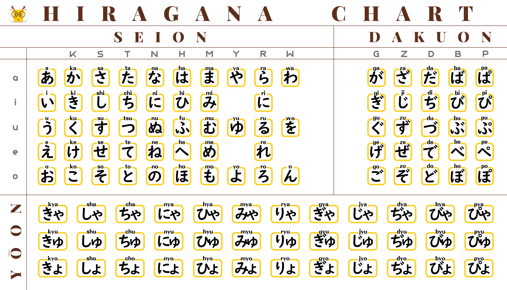

Learn about the Hiragana characters and their pronunciation. Here are some examples:
Hiragana Overview
Basic Characters: Hiragana consists of 46 basic characters, each representing a different syllable. These characters are derived from simplified Chinese characters and are more rounded in shape compared to kanji.
Syllable Structure: The basic structure of a hiragana character is a consonant sound (or a vowel sound if there is no initial consonant) followed by a vowel sound. For example, "か" (ka) or "き" (ki).
Vowels: Hiragana includes five vowel sounds: あ (a), い (i), う (u), え (e), and お (o). These vowels can be combined with consonant sounds to form syllables.
Diacritics: Hiragana characters can be modified with diacritic marks to represent additional sounds. For example, the dakuten ( ゛) mark changes the sound of a kana from unvoiced to voiced. For instance, か (ka) becomes が (ga) with the addition of dakuten.
Small Characters: Small versions of certain hiragana characters are used to represent additional sounds. For example, っ (small tsu) is used to indicate a pause or a doubled consonant sound in pronunciation.
Usage: Hiragana is often used for native Japanese words and grammatical elements. It is commonly used in conjunction with kanji in written Japanese. Additionally, hiragana is used for writing the endings of verbs and adjectives.
Handwriting: Hiragana characters are often used in handwritten notes and personal communication. Learning to write hiragana is an essential skill for anyone studying the Japanese language.
Learning: Beginners in Japanese language study often start with hiragana before moving on to katakana and kanji. There are many resources available, including charts, practice sheets, and online tools, to help learners master hiragana.
Hiragana, along with katakana and kanji, plays a crucial role in Japanese written communication. It's a fundamental aspect of the language, and acquiring proficiency in hiragana is an important step for anyone looking to read and write in Japanese.